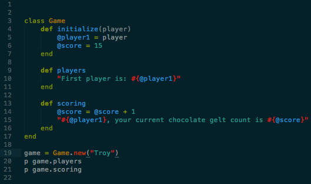
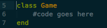
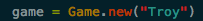
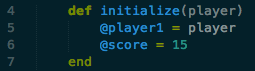
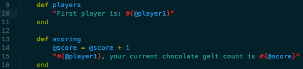
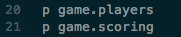

Classes in Ruby
September 6, 2014
Classes in Ruby, what are they? How do they work? Lets take a few minutes and talk about classes in Ruby. It is easy for me to think about this in terms of building something. One description that I have heard used is "Classes are the blue print for an object." In an earlier life I was a general contractor, I built homes, finished basements, remodeled kitchens. I used drawings (blue prints) to build from. These drawings describe features of the thing I was building. The structure to hold up the house. what interior finishes to install, what color the walls were. All these things were organized in a set of drawings. Classes work in basically the same fashion. Lets brake this code down.

In ruby objects contain data and methods that can act on that data. Objects are created from class definitions. This begins with a keyword
class then the Name, with a capital letter. Then the code of the class, last is the keyword end.
To create a object in Ruby you call the
.new method on that class. In my example, game is the new object of the class game,
You can also add code to the initialize method to set initial values for variables, as I did with @score, every player will start the game with 15 chocolate gelts. Also from this example you can see that initialize method can also take an argument, initialize takes the argument
player and it initializes the variable @player1. When initialize takes an argument it must be passed when .new is called. In this example when game is called it passes Troy.
You might ask, what is the
@player1. This is called an instance variable. Instance variable start with a single '@' sign. The value of each instance variable is different for each object created from a class. In my example the argument "Troy" is stored in the instance variable @player1. The @score I have set the value to a default of 15.
I can now have different featurs to the class Game. In my example I have two more methods,
players and scoring
These are very simple. The method players simply returns the instance varaible
@player1 witch is Troy and tells Troy that he is starting with 15 chocolate gelts, the default value for every starting player. The second method scoring will add one to the instances varaible @score and returns that the player (Troy) now has a total of 16 chocolate gelts.
This last bit of code is just calling on the object
game method players, OR, scoring to insure that the method returns the expected result.
Conclusion
As you can see, in the basic of terms, classes are easy to use. It really orinizes the code. Keeps the code DRY, just the way we like it. Please continue to check back in. I am going to try and create the game Dreidel. As you all know, I'm a little busy right now but when ever I have some free time I will spend it, with you, on creating an interactive game!